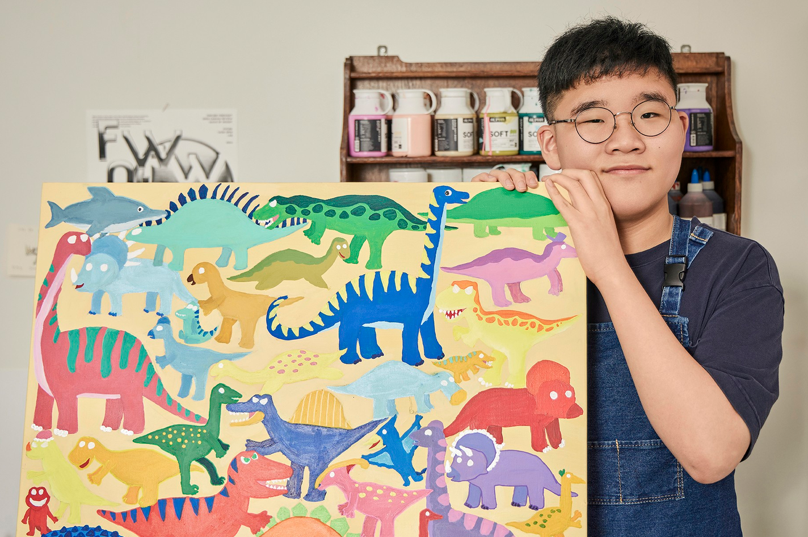
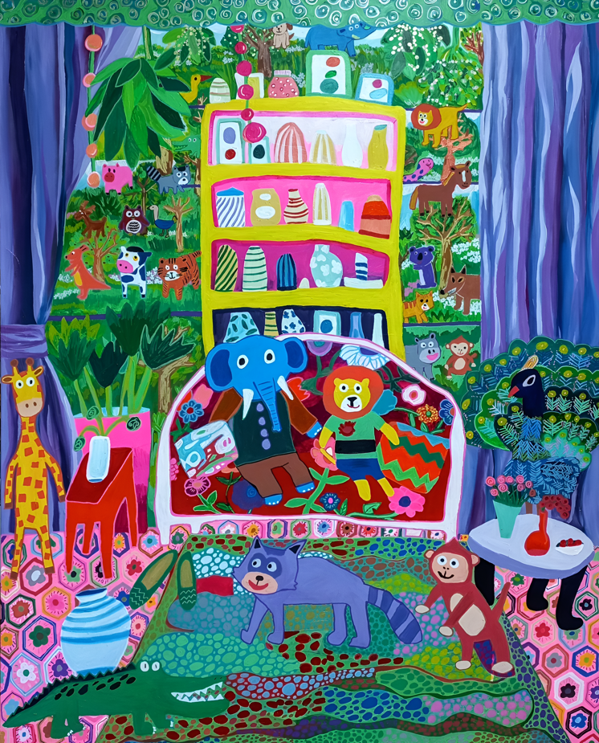

Spotlight: Jaeyong Choi

1. What is your favorite food or snack these days?
I like fruit. I like all fruits because they’re sweet and delicious.
And I also really like ice cream and pizza.
Among them, I especially like pepperoni pizza and combination pizza.
(Jaeyong really loves fruit. He likes all kinds of fruit so much that he says he can’t even pick just one. And because this summer was very hot, he often enjoyed ice cream right by his side while eating.)
2. If you could do whatever you wanted for one whole day, what would you like to do?
I would like to draw, because I love drawing.
I can keep drawing all the time and still love it. And I also like LEGO~
(Jaeyong especially likes drawing animals and characters—sometimes repeating them dozens of times, or spending the whole day drawing. Even during breaks from working on larger projects, he continues drawing his favorite animals and EBS characters. He enjoys drawing characters he sees on screen. LEGO is also his number one favorite gift.)
3. What is your favorite season? And what kind of weather do you like?
I like summer. When the sun shines brightly, it makes me feel happy.
And I also like going to the swimming pool.
(He says that bright, sunny weather always lifts his mood. Jaeyong’s feelings are strongly influenced by the weather. He loves playing in the water so much that he goes swimming all year round, but summer is still his favorite. Thinking about it, he probably likes it even more because summer means vacation and the chance to travel.)
4. Many animals appear in your exhibition works. Which one do you feel the most affection for?
I like drawing animals because they’re my friends. In my works, I especially like the lion “Krua” and the elephant “Bupuri.”
They’re my close friends.
(They are Jaeyong’s very best friends. He goes on journeys with them. He gave names to the animal friends in his works, and he paints them happily traveling together through the places he has visited and loved.)
5. If you could step into the world of your own drawings, what would you do first?
I would go on a trip. I’d like to go to an amusement park with my friends, ride rides, eat delicious food, and have lots of fun.
(He would love to spend joyful time with his closest friends. That’s why he’s encouraged to travel and experience even more, so he can also meet new friends.)
6. How did you feel when you saw Choi Sion’s artwork, which was inspired by your work?
It’s really cool. It’s so colorful and the colors are so beautiful. I feel proud.
(After seeing Choi Sion’s collaboration piece, he felt even more regretful about not being able to see the exhibition in person. Jaeyong is actually a twin, so seeing the twin-like “pair” artworks made him so happy, as if he had gained a drawing friend. He feels very thankful that his work inspired another wonderful piece.)
7. What kind of themes or subjects are you working on these days?
I’m drawing animals, and also traveling with my animal friends. I drew a trip to the sea.
I draw a lot of things I like.
I also draw on hanji (Korean traditional paper), and I do digital work too.
(Jaeyong is drawing the trips and experiences he has had. He wants to share happiness by showing the joyful moments spent with his animal friends. He also enriches his works by adding in characters he loves. Recently, he’s been learning the delicate techniques of traditional painting on hanji, while also experimenting with digital character art and other materials. He expresses freely what he wants, explores new materials and methods, and makes them his own as he grows.)

1. 요즘 가장 좋아하는 음식이나 간식은 무엇인가요?
저는 과일을 좋아해요. 모든 과일은 달콤하고 맛있어서 좋아요.
그리고 아이스크림, 피자도 정말 좋아해요.
그중에서 페파로니 피자와 콤비네이션 피자가 좋아요.
(재용이는 과일을 정말 좋아합니다. 모든 과일을 다 좋아해서 고를 수가 없다네요.
그리고 이번 여름은 정말 더워서 아이스크림을 옆에 두고 먹었네요.)
2. 만약 하루 동안 하고 싶은 걸 마음껏 할 수 있다면 무엇을 하고 싶나요?
내가 좋아하는 그림그리기예요.
그림그리기는 계속 그려도 넘 좋아요. 그리고 레고도 좋은데~
(재용이는 특히 동물과 캐릭터를 좋아해서 수십 번씩 반복해서 그리거나 하루 종일 그림을 그리기도 합니다. 지금도 작품그리다가 쉬는 시간에도 재용이가 좋아하는 동물, EBS캐릭터를 계속 그립니다.
영상 속에서 보는 캐릭터 그리는 것을 좋아합니다. 레고 역시 선물 1순위로 좋아합니다.)
3. 작가가 가장 좋아하는 계절은 언제인가요? 또 어떤 날씨를 좋아하나요?
저는 여름이 좋아요. 해가 쨍쨍 내리쬐면 기분이 좋아요.
또 수영장에도 놀러 가서 좋아요.
(화창하고 햇빛이 나면 기분이 좋아진다고 합니다. 재용이는 날씨따라서 기분에 영향을 받거든요. 물놀이를 넘 좋아해서 사계절 가리지 않고 수영장을 가는데 그래도 여름을 제일 좋아합니다. 생각해보니 방학이 있어 여행을 가서 더 좋아하는 것 같아요.)
4. 이번 전시 작품에 동물들이 많이 등장하는데요, 이 중에 제일 애정을 갖고 있는 동물은 어떤동물인가요?
내 친구들이고 동물들이 좋아서 그리고 있어요. 작품 속에 나오는 사자 ‘크아’와 코끼리 ‘부푸리’예요.
친한 친구니까요.
(재용이의 제일 친한 친구들입니다. 이 친구들과 함께 여행을 떠나고 있습니다. 작품 속 동물친구들에게 이름을 지어주고 재용이가 여행한 곳과 좋아하는 곳을 친구들과 같이 다니며 행복한 그림을 그리고 있습니다.)
5. 만약 본인이 만든 그림 속 세상에 들어갈 수 있다면, 가장 먼저 무엇을 하고 싶나요?
여행을 떠날거예요. 친구들과 놀이동산에 가서 놀이기구도 타고 맛있는 것도 먹고 신나게 놀고 싶어요.
(재용이의 가장 친한 친구들과 즐거운 시간을 보내면 좋을거 같아요.
그래서 더욱 많이 여행하고 경험하게 해주고 있는 거 같아요. 재용이도 또 다른 친구들이 생길 수 있게요.)
6. 작가의 작품에서 영감을 얻어 탄생한 최시온 학생의 작품을 보았을때 어떤 느낌이 들었나요?
정말 멋져요. 알록달록하고 색깔이 완전 예뻐요. 뿌듯해요.
(최시온 작가님 협업작품을 보고나니 전시에 직접 가서 못 본 게 더 아쉽더라구요.
재용이 작품과 쌍둥이 작품~ 재용이가 쌍둥이거든요 ㅎㅎ 그림친구가 생긴 것 같아 넘 행복합니다.
또 다른 멋진 작품으로 만들어 주셔서 감사드립니다.)
7. 요즘에는 어떤 주제나 소재의 작품을 하고 있는지 알고 싶어요.
동물들, 그리고 내 동물 친구들과 여행을 떠나는 것을 그리고 있어요. 바다로 여행간 걸 그렸어요.
내가 좋아하는 것을 많이 그려요.
한지에도 그리고, 디지털 작업도 해요.
(재용이가 여행하고 경험했던 것을 그림으로 그리고 있습니다. 작품에 동물친구들과 함께 즐겁게 지낸 순간들을 그림으로 표현해 행복을 전해주고 싶어합니다. 작품 속에 좋아하는 캐릭터를 등장시켜 작품을 더 풍성하게 만들기도 합니다.
요즘에는 한지에 동양화를 그리면서 또 다른 섬세함이 필요하다는 것도 배우고 있습니다.
디지털 작업으로 캐릭터 그리기도 하고 다양한 재료도 접하고 있습니다.
본인이 그리고 싶어하는 부분을 마음껏 표현해 보고 새로운 재료나 방법을 배워가며 자신의 것으로 만들어 가며 성장하길 기대합니다.)
